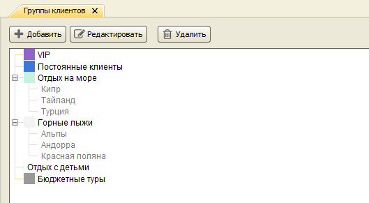
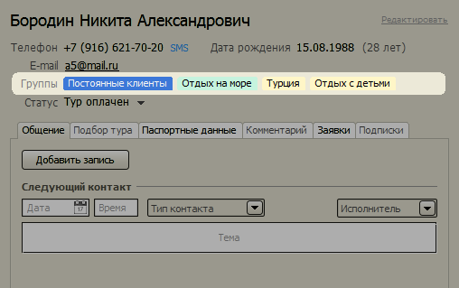
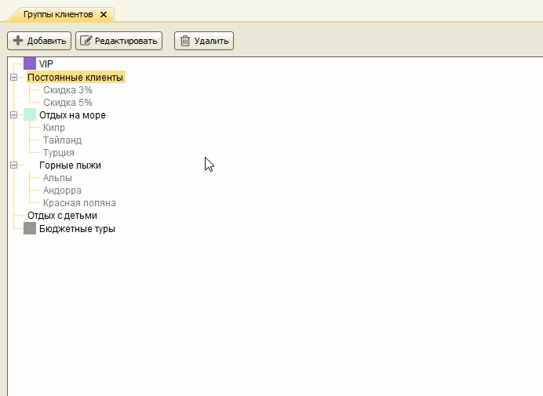
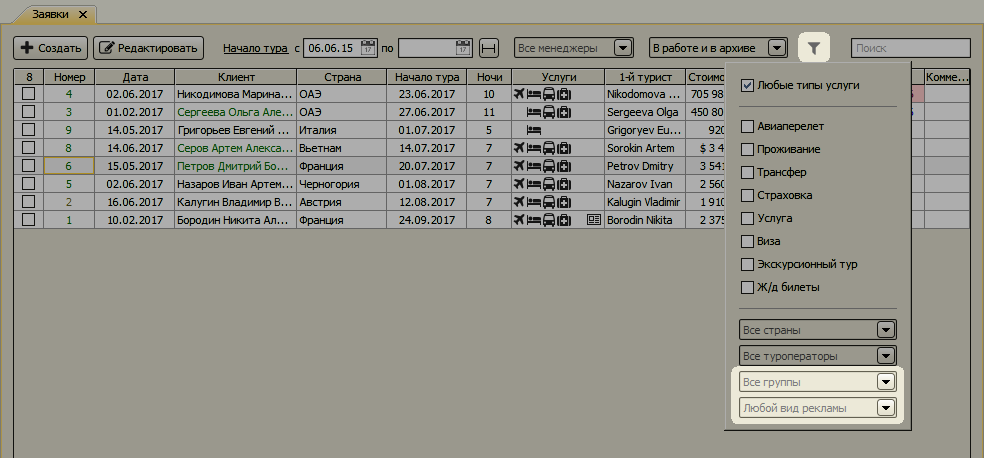
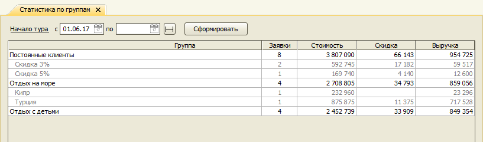
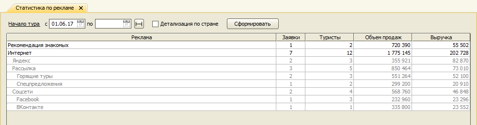
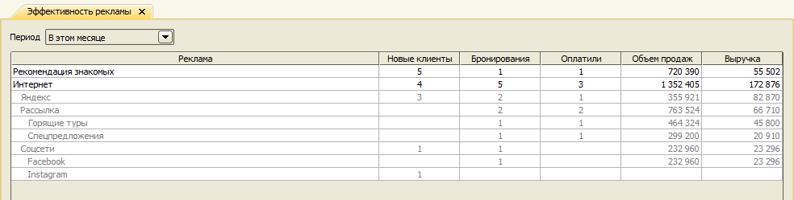

Изменения в версии 2.9.4
- Обновленный справочник "Группы клиентов"
- Обновленный справочник "Реклама"
- Отбор заявок по группе клиентов и рекламе
- Отчет по группам клиентов
- Обновленный отчет "Статистика по рекламе"
- Отчет "Эффективность рекламы"
Обновленный справочник "Группы клиентов"
В справочнике "Группы клиентов" каждая группа теперь может иметь одну или несколько подгрупп, которые, в свою очередь, могут тоже иметь подгруппы. Это позволяет организовывать группы в виде древовидной структуры.

В справочнике клиентов изменился внешний вид перечисления групп, к которым относится клиент.

Можно настраивать цвет фона и текста названия группы.

Подробнее о новых функциях - на странице документации справочника.
Обновленный справочник "Реклама"
Справочник Реклама теперь тоже, как и справочник "Группы клиентов", может иметь иерархическую структуру.

Это позволяет группировать виды рекламы и рекламные компании, чтобы в отчетах видеть показатели по каждой конкретной рекламной компании и всему виду рекламной активности в целом. См. отчеты Статистика по рекламе и Эффективность рекламы.
Отбор заявок по группе клиентов и рекламе
В журнал заявок добавлена возможность фильтровать заявки по группе клиентов и рекламе.

Отчет по группам клиентов
Отчет показывает результаты продаж для каждой группы клиентов.

Обновленный отчет по рекламе
Отчет показывает результаты продаж за определенный период по каждому виду рекламы. Результаты по подвидам суммируются в родительском виде рекламы. Возможна детализация по странам.

Отчет "Эффективность рекламы"
Данный отчет позволяет проанализировать отдачу от рекламной компании, выраженную в количестве привлеченных клиентов, суммарной стоимости заказанных туров и выручки.

Остались вопросы? Напишите нам на e-mail